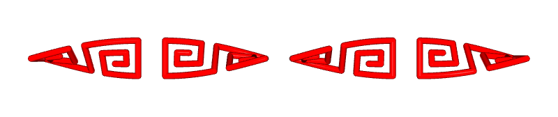
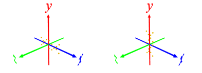
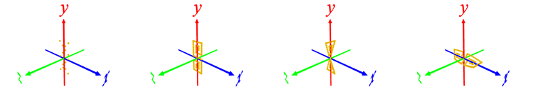
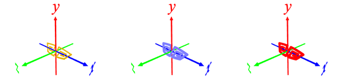
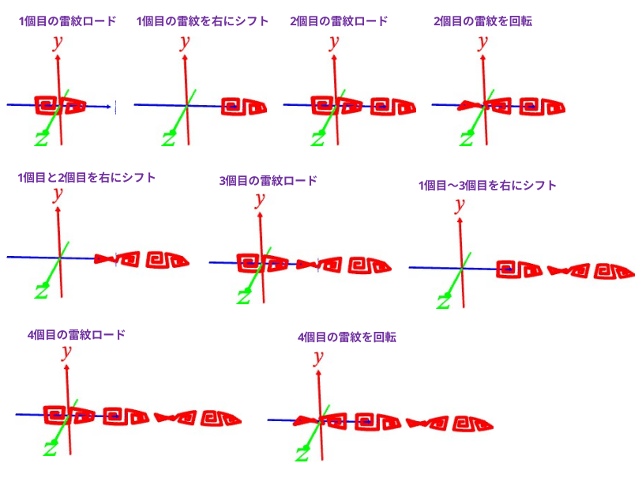

[1] 雷紋の頂点データの読み込み(＋前処理)
l data\raimon.txt ･･･ 雷紋の頂点データを読み込む
(エンターキー押下) ･･･ スクリプトを実行
p r 0 0 90 ･･･ z 軸周りに 90°回転する
※ ツールの都合上, 長手方向が y 軸になるようにする

[2] 雷紋の頂点データを細分化してねじる
p i ･･･ 頂点データの情報を表示
(例)
x 0.333333 -0.166667 - 0.166667
y 0.944444 -0.444444 - 0.500000
z 0.000000 0.000000 - 0.000000
length between adjacent points: 0.111111 - 0.472222
点と点の間が最小 0.11･･･なのでその約半分(0.05)に細分化してみる
p subdiv 0.05 ･･･ 細分化
p twist y 90 ･･･ y 軸に沿って90°ねじる
p r 0 0 -90 ･･･ z 軸周りに -90°回転

[3] メッシュ化, 着色
ねじった 3D 座標に沿ってメッシュ化する
polyline 25 0.04 1 sphere spher ･･･ メッシュ化
パイプ画数 25
パイプ半径 0.04
パイプの被覆率 1 (100%)
先端と末端に半球をつける
着色する
c 255 0 0 ･･･ 赤でペイント
save twisted_raimon.ply ･･･ メッシュをセーブ

[4] 配置
配置する
t 1.2 0 0 ･･･ x 方向に 1.2 移動
l twisted_raimon.ply ･･･ メッシュをロード
r 90 0 0 ･･･ x 軸周りに 90°回転
merge ･･･ 前のメッシュとマージ
t 1.2 0 0 ･･･ x 方向に 1.2 移動
l twisted_raimon.ply ･･･ メッシュをロード。今回は回転しない
merge ･･･ 前のメッシュとマージ
t 1.2 0 0 ･･･ x 方向に 1.2 移動
l twisted_raimon.ply ･･･ メッシュをロード
r 90 0 0 ･･･ x 軸周りに 90°回転
merge ･･･ 前のメッシュとマージ
centering ･･･ 全体をセンタリングする
save twinsted_raimonx4.ply ･･･ 全体のメッシュをセーブ
